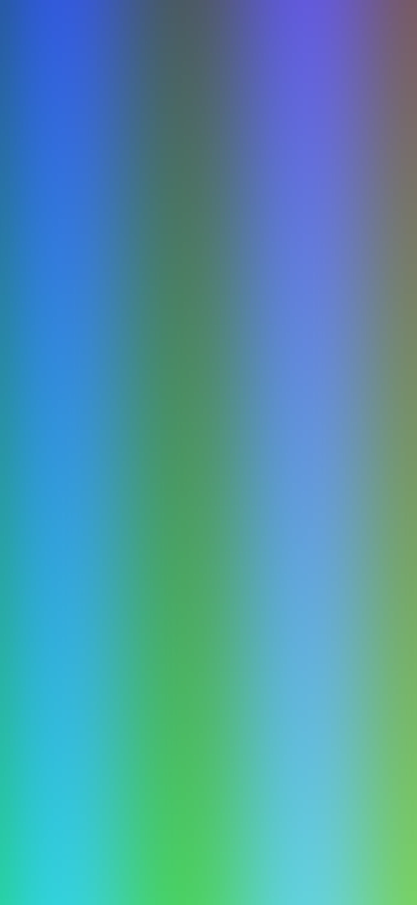

💳 Перевести кошти
Оберіть зручний спосіб
monobank
ПриватБанк
💳 4441 •••• •••• 4077
📋
Apple Pay
Google Pay
Binance Pay
₿ Bitcoin (BTC)
📋
◆ Ethereum
📋
₮ USDT Tron
📋
◎ Solana
📋
◇ USDC (Polygon)
📋
USDC (Polygon · Trust)